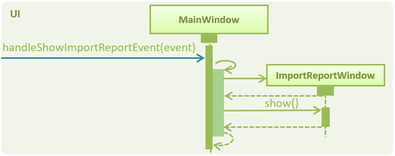

PROJECT: Invités
This portfolio documents my contributions to Invités. |

Invités is a desktop application that helps people to organize and manage events. It simplifies and streamlines common event management tasks such as managing a guest list, attendance taking, QR code ticketing and mass email sending. With our application, event planners are able save time and effort as it offers a much more beginner friendly and specialized workflow as compared to its competition such as Microsoft Excel or Google Sheet. Furthermore, it is developed to be highly versatile and can be used to plan and manage a wide range of events from school camps to weddings.
The application is developed in Java and has a graphical user interface created with JavaFX.
Invités is developed as part of a team project for a software development module in National University of Singapore. I was tasked with the responsibility to implement a data sharing mechanism for the guest data. Below is a breakdown of our various roles in the team, which consists of five members.
-
Srivastava Aaryam: Email communication
-
Sandhya Gopakumar: Events management
-
Sarah Taaher Bonna: Guest list management
-
Tan Tze Guang: Attendance management
-
Tan Wei Ming: Data sharing
Summary of contributions
This section summarizes my main contributions to the team. It showcases my ability to develop software features and work on software as a team. |
-
Major enhancement: added the ability share data by importing/exporting guests to Comma Separated Values(CSV) files
-
What it does: Allows event planners to export/import guests along with their details to CSV files. For unsuccessful imports, an import report window will be generated to show the malformed data and its associated errors.
-
Justification: The import feature is critical to the application because it allows event planners to save time by adding guests in batches. The export feature also allows event planners to share guest data easily.
-
Highlights: This enhancement is designed to support future file formats easily and it required an in-depth analysis of several design alternatives.
-
-
Code contributed: RepoSense link
-
Other contributions:
-
Project management:
-
Enhancements to existing features:
-
Remodelled the guest list and added a guest preview panel in the user interface (Pull requests #88, #100, #152)
-
added utility class to generate QR codes for ticketing (Credits: XZing Core)
-
-
Community:
-
Contributions to the User Guide
Given below are sections I contributed to the User Guide. They showcase my ability to write documentation targeting end-users. |
Import guests from CSV file : import
Imports multiple guests with data from a specified CSV file. To create your own CSV file for importing guests, please see Section 6: "CSV Guest List Format" for the accepted format.
Format: import FILE_PATH
Examples:
-
import directory/subdirectory/guestlist.csv
You will populate the guest list with the data imported from the CSV file in the specified path.
Exporting guests to CSV file : export
Exports guests' data in the guest list to a specified CSV file. Allows you to share your guest list easily using the exported CSV file. The format of guest fields in the CSV file is the same format as the import command and can be found at Section 6: "CSV Guest List Format".
Format: export FILE_PATH
Examples:
-
export directory/subdirectory/guestlist.csv
You will export the currently filtered guest list entries into a CSV file in the specified path.
CSV Guest List Format
The import and export command will only work with CSV files according to a predefined format. To create valid CSV files, guests fields must in the following format below and each guest must be entered on a new line.
Format: NAME,PHONE_NUMBER,EMAIL,PAYMENT,[TAG]
|
Individual guest fields shall not contain any commas. |
Example: sample CSV file
Contributions to the Developer Guide
Given below are sections I contributed to the Developer Guide. They showcase my ability to write technical documentation and the technical depth of my contributions to the project. |
Import/Export Command
Current Implementation
High level overview of the class hierarchy
The import and export command enables batch importation and exportation of people into and out of the guest list. Additionally, the import command will create a popup window to show the errors during import only if there are any. The commands currently only support comma-separated value file format (CSV), however, it is designed to easily support other formats such as VCard in the future.
The implementation of the import and export feature mainly resides under the logic component of the application. The import command involves an additional user interface (UI) component that shows import errors.
The Import/Export feature is facilitated by the AdaptedPerson,PersonConverter and SupportedFile interfaces. They provide the behaviour specifications so that the Import/Export command will be able to operate without knowing the underlying implementations.
-
AdaptedPersonrepresents a person in the respective file format. It requires the following method.-
AdaptedPerson#getFormattedString(): returns the string representation of the person according to the particular file format.
-
-
SupportedFilerepresents a supported file that is able to read and write `AdaptedPerson`s' to the actual file on the computer. Here are some of its key methods-
SupportedFile#readAdaptedPersons(): Returns all person in the form of `AdaptedPerson`s from the file -
SupportedFile#writeAdaptedPersons(): Writes allAdaptedPersonto the file
-
-
PersonConverterrepresents a person converter that is able to convert betweenPersons andAdaptedPersons. Here are some of its key methods.-
PersonConverter#encodePerson(): Encodes aPersonobject and returns the correspondingAdaptedPersonobject -
PersonConverter#decodePerson(): Decodes anAdaptedPersonobject and returns correspondingPersonobject
-
To support the import/export of CSV files, CsvAdaptedPerson,CsvPersonConverter and CsvFile implements the above mentioned interfaces.
For the import command, the popup window to show errors encountered is facilitated by the ImportError and ImportReportWindow classes.
-
ImportErrorrepresents an error encountered during the import command. It stores the actual CSV formatted person and its associated error message. -
ImportReportErroris the controller class of the popup window that will display allImportErrors encountered during the execution of an import command.
The following class diagrams shows the relationship between the classes and interfaces mentioned above.

Command mechanism
The import command will first read the csv file and loop through all the guest data and add them into the model. When application encounters a particular guest in CSV file which fails to be converted or is already an existing guest, an ImportError will be created. These ImportError object will be added in a list within the import command.
After the command completes the importation of all guests in the guest list, if there are unsuccessful imports, it will trigger a ShowImportReportEvent which will display the errors
The following sequence diagram shows how the Import operation works:

The ShowImportReportEvent will be handled by the MainWindow according to the following sequence diagram below.

The export command will only export the currently filtered list by calling Model#getFilteredPersonList. This enables greater flexibility as it provides a way for users to select specific groups of people to export. The following sequence diagram shows how the export operation works:

Design Considerations
Aspect: Implementing decoding/encoding functionality in Import/Export command
-
Alternative 1 (current choice): import & export command be able to do accept a general
PersonConverter-
Pros: Reduction in code duplication when supporting other file-formats in the future. Easier to mock and do unit tests.
-
Cons: More complicated to implement.
-
-
Alternative 2: Each supported format has its own command which knows how to do the required conversion
-
Pros: We do not need to check for the required import/export format required.
-
Cons: Higher testing overhead for possible numerous types of export & import command. Duplicated boilerplate code.
-
Aspect: Implementing the reading/writing of file functionality in Import/Export command
-
Alternative 1: Abstract the writing/reading of files into separate classes,
SupportedFileinterface andCsvFileclass (current choice)-
Pros: Able to add support for other file formats with changing existing code.
-
Cons: Increased code complexity.
-
-
Alternative 2: Use a utility class with static methods
-
Pros: Simple to implement.
-
Cons: Violates open-close principle. Code will only work for CSV files. High coupling with the import/export command. Impossible to mock, decreases the testability of the import/export commands.
-